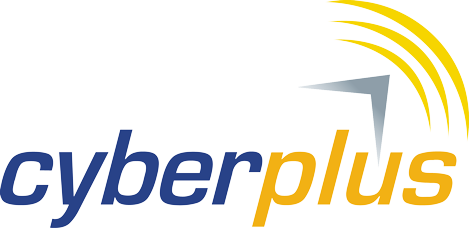
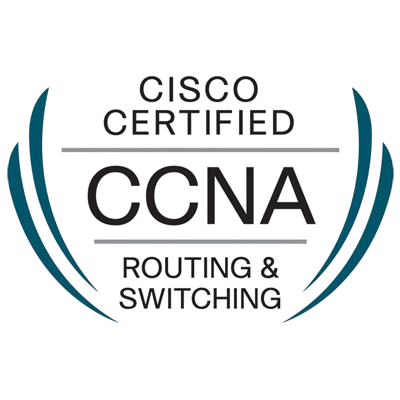

Semua terasa lebih dekat.
Panggilan keluarga, tontonan favorit, dan waktu belajar. Ceritakan kebutuhan koneksi seluruh penghuni rumah Anda.
Jelajahi kebutuhan rumahNEXT-GEN FIBER CONNECTION
Streaming, gaming, bekerja, dan tetap dekat dengan keluarga. Nikmati internet full fiber tanpa batas kuota bersama Sahabat Wifi Nusantara.
Mulai Rp160.000 / bulan
20–100 Mbps · Full fiber to the home
↗ Kerja & belajar
▷ Hiburan di rumah
⌂ Keluarga & teman
✳ Usaha & ide baru
REKANAN KAMI
Cyberplus, rekanan Sahabat Wifi Nusantara.

LICENSING & CERTIFICATION

LEBIH DARI SEKADAR WIFI
Setiap orang punya cerita dan kebutuhan berbeda. Mari mulai dari apa yang paling penting untuk Anda.
Panggilan keluarga, tontonan favorit, dan waktu belajar. Ceritakan kebutuhan koneksi seluruh penghuni rumah Anda.
Jelajahi kebutuhan rumahDari komunikasi pelanggan sampai kegiatan operasional. Konsultasikan kebutuhan internet untuk usaha Anda.
Diskusikan kebutuhan usahaBelum tahu harus mulai dari mana? Tanyakan informasi paket, pemasangan, dan ketersediaan layanan langsung kepada kami.
Mari ngobrolGratis biaya instalasi & maintenance sesuai promo pada brosur. Konfirmasikan syaratnya kepada tim.
SATU LANGKAH LEBIH TERHUBUNG
Empat pilihan full fiber untuk rumah, kos, UMKM, dan kantor.
Harga dan rekomendasi perangkat mengikuti brosur. Performa aktual dipengaruhi perangkat, WiFi, dan aktivitas bersamaan. Konfirmasikan pajak, ketentuan promo, serta ketersediaan alamat kepada tim.
KNOW YOUR CONNECTION
Kenali koneksi yang sedang Anda gunakan. Ukur estimasi download, upload, dan respons jaringan langsung dari perangkat ini.
Untuk hasil lebih konsisten, hentikan unduhan lain dan gunakan kabel LAN jika tersedia.
Pengujian HTTP satu koneksi menuju endpoint Cloudflare, bukan tes kecepatan maksimum paket. Latensi adalah waktu respons HTTP; jitter adalah variasi respons antarsampel. Hasil dipengaruhi WiFi, browser, perangkat, dan rute server. Tes mengirim data uji sintetis, bukan file pribadi. Cloudflare menerima IP koneksi Anda. Tidak ada hasil yang disimpan oleh website ini.
Siap mengukur koneksi Anda.
Grafik menampilkan sampel transfer aktual. Tes memakai hingga sekitar 37 MB data uji.
Buka tes lengkap Cloudflare ↗MULAI DENGAN MUDAH
Tiga langkah untuk mengenal layanan dan merencanakan pemasangan.
Mulai percakapanHubungi kami di WhatsApp. Sampaikan alamat serta bagaimana Anda menggunakan internet.
Diskusikan ketersediaan jaringan, detail paket, biaya, serta ketentuan pemasangan.
Setelah pilihan disepakati, koordinasikan jadwal dan persiapan pemasangan bersama tim.
DEKAT DENGAN ANDA
Melayani Jabodetabek dan sekitarnya. Masukkan kecamatan atau kota Anda, lalu tanyakan ketersediaan jaringan di alamat lengkap Anda.
Pengecekan dilakukan oleh tim melalui WhatsApp.Kirim alamat lengkap, kecamatan, dan kota melalui WhatsApp. Tim akan mengonfirmasi apakah layanan tersedia di lokasi Anda.
Pilihan paket: 20 Mbps Rp160.000, 30 Mbps Rp190.000, 40 Mbps Rp215.000, dan 100 Mbps Rp260.000 per bulan. Semua paket pada brosur menggunakan full fiber dan unlimited. Konfirmasikan pajak, promo, serta ketentuan pemasangan kepada tim.
Bisa. Ceritakan jenis usaha, perkiraan perangkat yang digunakan, dan aktivitas yang membutuhkan koneksi agar tim dapat mendiskusikan pilihan layanan.
Siapkan alamat lengkap dan nomor yang dapat dihubungi. Persyaratan lain, jadwal, serta biaya akan dikonfirmasi oleh tim sebelum pemasangan.
Hubungi WhatsApp 0858-8132-2321 melalui tombol konsultasi di website ini.
KONEKSI BARU DIMULAI DI SINI
Sahabat untuk rumah Anda. Teman tumbuh untuk usaha Anda.